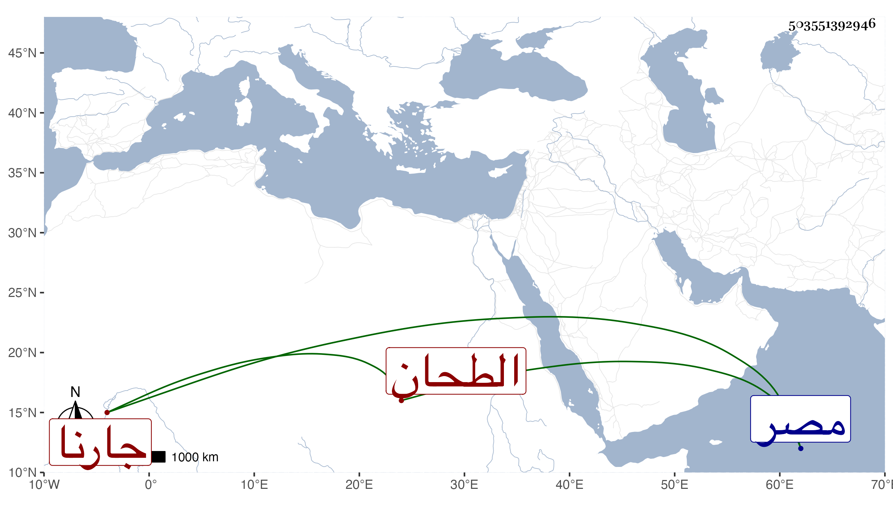

0902Sakhawi.DawLamic.ITO20230111-ara1.EIS1600.503551392946
Biography ID: 503551392946
492
عبد الرزاق بن عبد العظيم الطحان جارنا أحد المدولبين بالديار المصرية ويعرف بأبيه . كان ملازما للجماعات راغبا في الخيرات وله مغلق هائل بالمقس ودار أنشأها بحارة بهاء الدين وغير ذلك ، وحج وأهين مرة من المحتسب فتألم . مات فجأة في ليلة السبت مستهل ذي الحجة سنة أربع وثمانين بعد أن زار الليث وصلى به عصر الجمعة وصلى عليه من الغد ودفن بتربته التي أنشأها بالقرب من الاهناسية ظاهر باب النصر ، وكان لا بأس به بالنسبة لطائفته بل ما أظن فيهم من يوازيه ممن حمل خبر المؤيدية والبيمارستان وغيرهما وقتا وشكر وكان للجلال المحلي عليه إقبال رحمه الله وعفا عنه .
